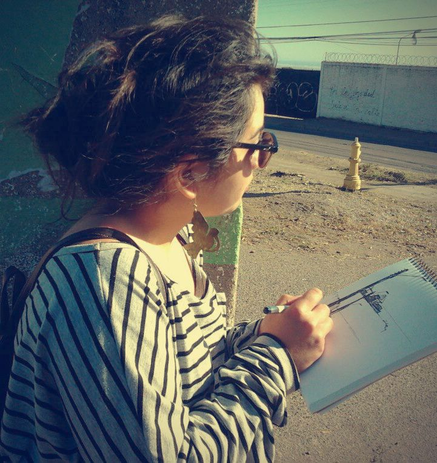

Contacto y más sobre mí

Nací en la V región de Chile, en el puerto de San Antonio. En el nonagésimo tercer día del año del calendario Gregoriano - 3 de Abril de 1993 -. Donde cursé mis esstudios de enseñanza básica y media. Junto al mar y su briza ralic´mis primeros dibujos. En la actualidad estudio Diseño Gráfico en la Escuela de Arquitectura y disño de la Pontificia Universidad Católica de Valparaíso. Mis intereses se enfocan en la ilustración y eel diseño Web. Y mis referentes son: Benjamin Lacombe, Alberto Montt, Alex Pelayo, vita Eve.